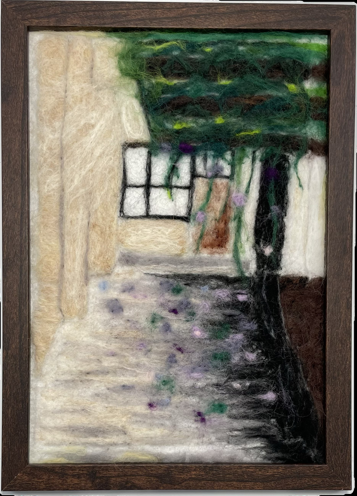

作品名稱：週六加課的小確幸
作者姓名：李亦甯
作品主題：牽牛花從藤蔓上落到走廊裡，在週六無人的早晨獨自浪漫
作品敘述：在高二的某個週六加課，為了可以開冷氣延續大家的生命，我一個人去儲值冷氣卡。在路上經過了空無一人的走廊，發現這裡別有洞天，花瓣隨意散落在地上，空氣特別清新，讓我放慢腳步，捨不得離開。
One Saturday during my second year of high school, we had an extra class. To keep everyone alive with air conditioning, I went alone to refill the air-conditioning card. On my way, I passed through an empty corridor and discovered a hidden, tranquil spot. Petals were scattered casually on the ground, and the air felt exceptionally fresh. It made me slow down, reluctant to leave.